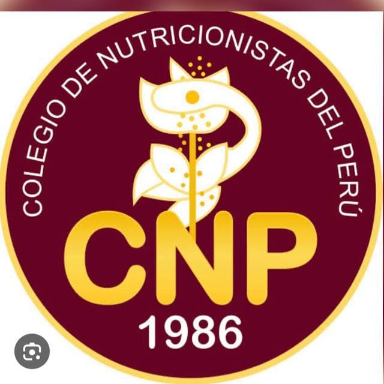

El Consejo Regional XIX Áncash del Colegio de Nutricionistas del Perú, creado en el año 2024, representa un avance importante en el proceso de descentralización institucional y fortalecimiento del ejercicio profesional del nutricionista en la región Áncash. Su creación responde a la necesidad de contar con una representación regional organizada, participativa y cercana a los colegiados, capaz de impulsar acciones orientadas al fortalecimiento profesional, la defensa gremial y la promoción de la salud y nutrición de la población. La región Áncash enfrenta importantes desafíos nutricionales y de salud pública, entre ellos la persistencia de anemia y desnutrición crónica infantil, el incremento de enfermedades no transmisibles relacionadas con la alimentación, así como brechas en educación alimentaria y acceso a servicios especializados de nutrición. Asimismo, los nutricionistas de la región enfrentan dificultades relacionadas con la limitada oferta laboral, el intrusismo profesional, las brechas de capacitación continua y el limitado posicionamiento institucional..
Detalles sobre la organización y los objetivos del equipo de trabajo:
La RESOLUCIÓN DE CONSEJO NACIONAL N°250-2024-CN-CNP, de fecha 18 de mayo de 2024, que aprueba la entrada en funcionamiento del Consejo Regional XIX Áncash.
Consulte y descargue las normativas, guías y formatos oficiales del área de nutrición.
| PLAN DE GESTIÓN 2026 NEO.docx | Categoría / Área | Acción |
|---|---|---|
| PLAN DE GESTIÓN 2026 NEO | Normativas MINSA | Ver / Descargar |
| Formato de Registro Mensual (HIS) | Estadística / Formatos | Ver / Descargar |